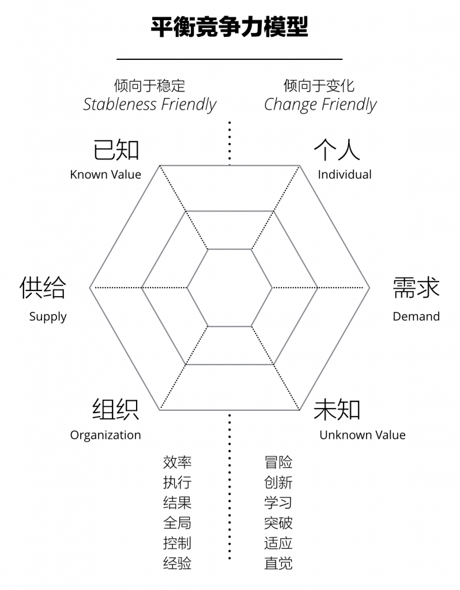
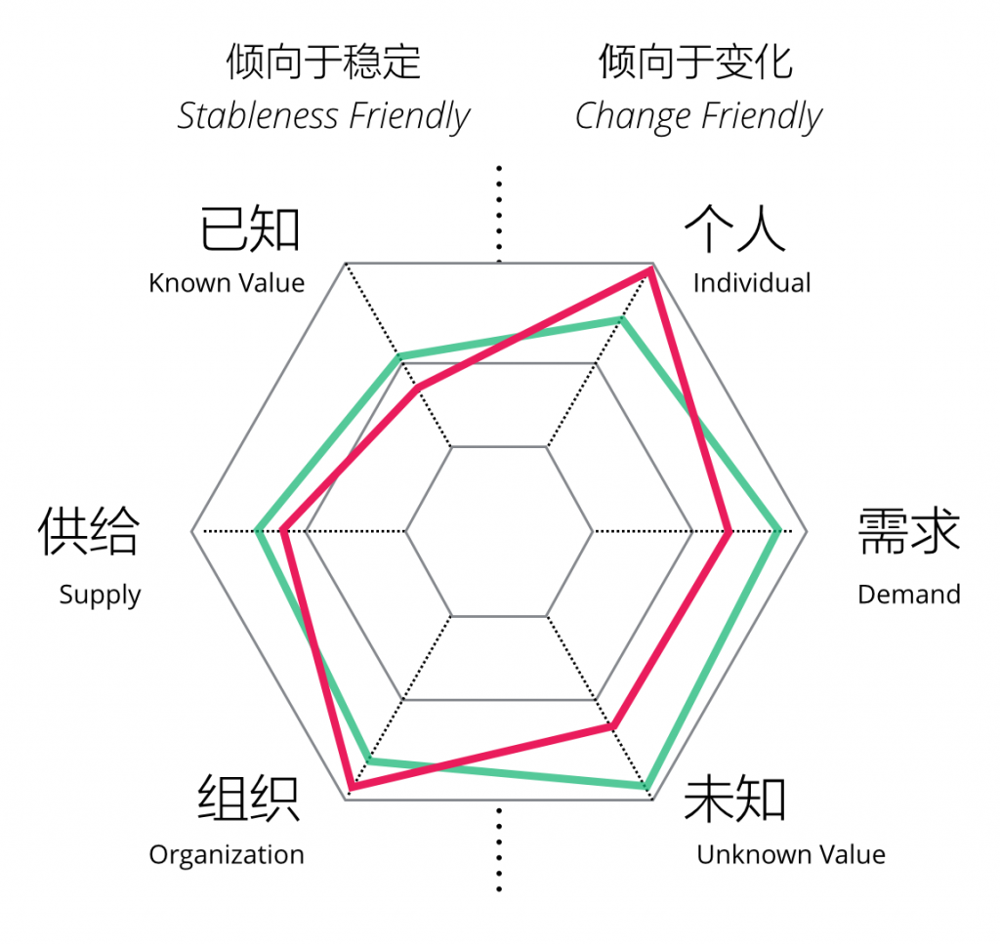
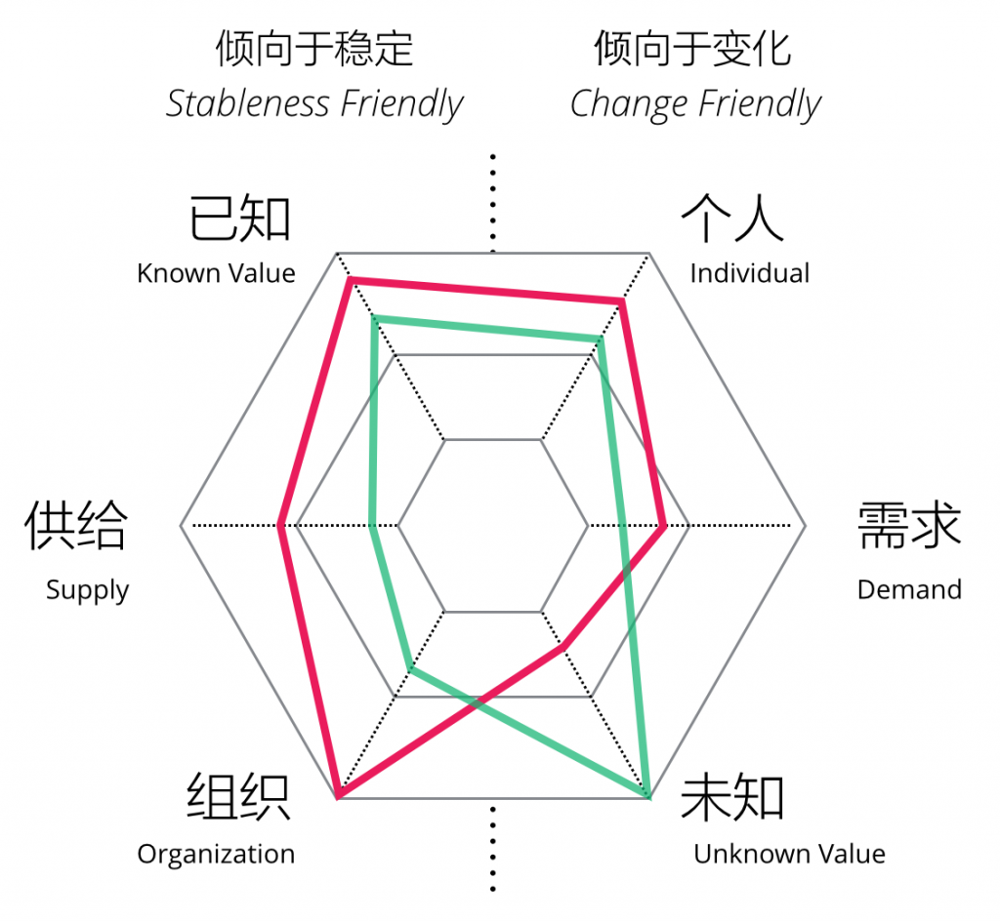

我是设计师，花了10年的时间才开始理解，最美好的事情其实是设计系统、一个“袖手旁观”的环境，我想这才是设计的最高境界。任何一个可持续的系统，永远是在一定时间里保持平衡，亦是设计思维中“调和”（Reconciliation）的体现，而从组织的角度，毋论小大，构建一个持续发展的组织的核心，是建立“平衡”的有机体。本文将讨论为什么平衡的系统才是可持续的、可持续的系统是如何依靠平衡竞争力来维持、领导力又是如何来积累这些竞争力的。
可持续的系统
一个完整的系统包含系统本身、外界环境、以及外界环境与系统的关系。系统和环境的关系如同子体与母体的关系，这样的关系本身是价值交换，在母子比喻中，交换的价值为：
- 子体给予母体的价值是对生命的延续、未来家庭的幸福、社会道德的满足；
- 母体给予子体的价值是蕴育的环境和生长的能量。
事实上对子体“不可持续”的起决定性因素的是母体的“变化”：当母体判断子体并不是自己生命的延续、也不会得到未来家庭的幸福、同时甚至会承担社会道德的压力，她所做的事情，可能是选择失去这个孩子。在这样的情况下，子体虽然线性增长，但是对于母体的“变化”毫无对抗可能，最终逝去。 很多时候我们都像是被孕育的孩子，虽然按照大自然给的规律增长，却无法预料母体的“变化”，换句话说，真正决定一个系统能够持续的真正因素是它与环境（母体）的关系，而不在系统本身。 但大部分情况下，我们的习惯是：
- 制定线性增长的目标；
- 寻找一个可以自然增长的环境；
- 预测环境的变化；
对于个人而言，它所对应的行为习惯是：
- 一个稳定的职业发展规划；
- 进入一个稳定的环境；
- 对未来的变化感到忧虑；
对于企业而言，它所对应的行为习惯是：
- 一个线性增长的商业计划；
- 寻找一个稳定赢利的市场；
- 进行大规模的市场研究；
事实上，这些行为习惯里，都和“与母体的关系”无直接关系，它所做的仍然要么是期待一个可以自然生长的稳定环境、要么是对可能发生的变化做出防御。但事实上，你就像子宫里的婴儿一样，完全不理解母体之外的世界，对于无法预期的变化时间和形式，你的努力将在变化面前变得徒劳。 因此，适应力（Adaptivity）才是可持续系统的核心关键，无论是对个人还是组织，那么如何提升适应力，这里使用一个“平衡竞争力”的思想框架来阐述适应力的来源。
平衡竞争力
当我们谈到一个商业组织的平衡时，主要在三个方面进行平衡：
- 已知和未知：基础运营都是为企业现有“已知”的业务服务，目的是帮助已有业务获得更高的运营效率，在单位成本内获得更高利润；创新性行为都是为“未知”的业务服务，目的是通过实验和大胆尝试寻找到新的业务模式、工作方式和利润增长点；
- 供给和需求：产品和服务以及人才招募和培养都是为“供给”服务，目的是保证企业价值的兑现、获得收益；销售与市场则是为企业价值“供给”服务，目的是获得更多商业机会和需求、获得收益；
- 组织和个体：流程和规章是保证组织在一定底线上完整运行的基础；企业文化是激发个体能动力的手段，目的是增强组织的协作能力、提升员工的归属感；
有趣的是，左侧的要素通常更加稳定和偏重纪律性，而右侧通常具备更高的变化、更大的风险。 这就是一个组织的左右脑，而一个组织是否能够有足够的适应力成为一个可持续的系统，往往决定于它右脑的强健程度。 一个完美的母体中，即没有未知、充分需求、标准个体，当组织有强大的已知价值交付能力、稳定的供给、以及高效的组织能力时，这个组织的竞争力是最高，而母体一旦发生了变化，这样的组织往往也是消亡最快的组织，这就是为什么我们发现，企业的绝大问题，都来自于这三个方面可能的左右失衡，例如：
- 市场突然变化导致主营业务拖累整体业务下行；
- 市场需求突然增大导致供给不足，服务质量下降；
- 市场人才思维模式的变化导致固有的人才管理体系无法适应，形成文化代沟；
在上述的每个方向，我们都将对应一个竞争力，如下图所示：

如果我们稍加改进，在每个维度上建立简单的评估体系，我们就可以感受出一个组织是否形成了较好的平衡竞争力，越平衡的组织，即在现有的环境中能够实现稳定增长，在市场的变化中也能迅速调整方向。 这个评估体系分别为：
已知
- 优秀：已知市场的龙头，具有丰富的经验和实践能力；
- 一般：已知市场的参与者，有稳定的经营模式；
- 糟糕：已知市场的边缘者，仍然处于摸索状态，苦于经营；
供给
- 优秀：对现有业务有足够的供给、优秀的人才招募和培养体系、高质量的产品和服务；
- 一般：基本满足市场需要、中等水平的产品和服务；
- 糟糕：无法供给市场需求，人员招募困难、流失率高；
组织
- 优秀：高效的组织动员性和协作性、合理的规章制度；
- 一般：动员性和组织执行力较弱、规章制度不完善；
- 糟糕：过于强调纪律和责任导致内耗、过于散漫的自由导致士气低下和缺乏责任；
未知
- 优秀：有策略地不断对未知领域进行尝试、对失败容忍度高；
- 一般：有时鼓励员工尝试未知领域，但对失败容忍度不高；
- 糟糕：不强调创新、一切以结果说话，没有创新的环境；
需求
优秀：全体有客户意识，对市场需求有敏锐的直觉，不断调整或创造服务和产品响应需求变化； 一般：较为高效的销售体系，能够推动业务及时响应需求变化； 糟糕：保守和避免变化的销售体系； 个体
优秀：具有自组织的个体精神、优秀的企业文化、崇尚个体能动力、扁平化； 一般：较好的上下级协作关系，较高的员工满意度； 糟糕：严格的等级制度、互相猜忌的员工关系。
根据这个评估体系，我们可以对一个组织的适应力进行评估，例如以我们的设计团队（红色）为例，我们的评估结果如下，我们也可以将它和企业B（绿色）进行一个对比：

从图中我们可以看出来，绿色的组织偏向于倾向变化，优势在于对需求的响应能力和对未知的创新能力，在已知业务领域还在摸索，未沉淀出稳定的业务模式；而红色的组织在最强的优势在于个人能动力和组织协作性性，但是对已知业务和供给方面仍有进步的空间，总的来说，这两个组织都是较为平衡的组织，因为相对的两个元素都较为平均。
领导力设计
在我看来，建立组织的平衡竞争力，从而提升其应对外界环境变化的适应力，最关键的核心是领导力的设计，这里说的领导力，有如下三点需要注意：
- 领导力是在每一个层级上产生的；
- 领导力是需要通过体验来培养的而不是天生具备；
- 领导力的培养需要通过具有领导力的人亲自完成；
一个平衡的领导力模型，必然适应上面所列举的竞争力模型，我们可以通过评估体系来简单评估目前领导者的平衡力，维度如下：
- 已知：是否熟悉最基础的业务模式和实践？具备交付业务的能力？
- 供给：是否属性当前产品和服务？是否能够参与到人才招募和培养体系中来？是否能帮助别人产生领导力？
- 组织：是否熟悉组织运营模式？是否能够参与建立规则和制度？是否能够代表组织的文化建设？
- 未知：是否主导、参与、支持各种类型的组织创新？
- 需求：是否参与到获得和响应需求的过程中来？
- 个体：是否帮助建立好的协作和员工关系？是否是个体的优秀代表？
作为例子，我们尝试比较两位潜在领导者的区别，从中我们可以了解双方的平衡性，比较如下：

从这个图上我们可以比较明显地感受到一个区别，红色的领导者偏向于组织运营以及已知业务，而绿色领导者专注于未知领域，而对组织级别的事务并不感兴趣。这里并不是一个能力的地图，只代表领导者当前的职责和兴趣点，一个具有设计思维的管理团队应该：
- 尽可能使整个团队的平衡竞争力图谱能够达成平衡；
- 尽可能让领导者多去获得其缺少维度的竞争力体验；
- 有策略地通过措施（相关的体验）补足某个方面的竞争力。
写在最后
以上便是我对组织适应性的理解，它包含以下逻辑：
- 一个可持续的系统取决于它对外界环境变化的适应性；
- 适应性来源于6种不同维度的平衡竞争力；
- 建设组织内的平衡竞争力需要平衡的领导力进行推动。
相似的道理，当我们在评价个人的竞争力时，也完全可以利用这样的框架，去思考自己竞争力的左右分布是如何。更加平衡的竞争力体系保证组织或个人在充满变化的“母体”中，获得更多的适应力，才能在更长的一段时间里保证个人和组织可持续的增长。